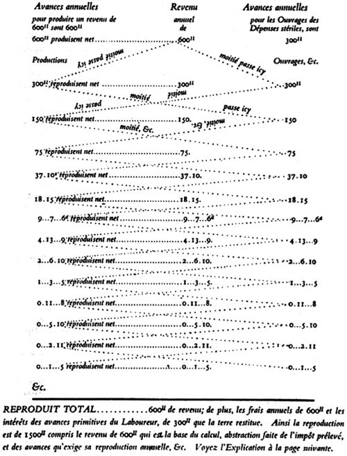

INTRODUÇÃO
1. ADAM SMITH E O SEU TEMPO
No decorrer do século XVIII houve um salto quântico na relação entre humanidade e ecossistema: foi o ponto em que começamos a deixar de ser passivos em relação à natureza. Numa era de relativa abundância devido à expansão colonial europeia, o aumento da população e, consequentemente, dos meios de produção, e do sistema comercial e bancário, e mesmo o surgimento dos grandes exércitos regulares ao estilo moderno, surge a divisão do trabalho como resposta à complexidade e mecanização industrial e militar. Convergiu de maneira importante com o começo da mecanização da indústria a física newtoniana, que inaugurou o fundamento teórico da técnica moderna e do motor a vapor.
Assim, sob um enfoque mais globalizante, o termo “Revolução Industrial” parece-nos gasto e enfraquecido para descrever uma alteração tão radical da posição do homem em seu mundo. Pode-se falar mais numa “Revolução Técnica” num sentido mais amplo: a “Teknê” como manipulação de elementos do ecossistema pela humanidade.
A grande mudança introduzida pela Revolução Técnica foi a inversão da “flecha” da relação homem-ambiente: antes ficávamos limitados a nosso nicho ecológico pelas forças naturais, incontroláveis; depois ocorreu uma “revolução” na melhor acepção do termo: uma inversão radical daquela dependência, pela aplicação de um conhecimento científico historicamente acumulado. Foi também uma revolução social causada pelo conhecimento de novos meios de produção. Este amplo processo deu-se gradativamente a partir do século XVIII, mas já por volta de 1870 propagara-se por todo o mundo ocidental. A partir da Revolução Técnica, o Ocidente passou a estender o seu domínio devido a esse grande poder conferido por um controle cada vez mais eficaz das forças da natureza.
Esta revolução teve seu cenário histórico preparado lentamente: o mundo de Adam Smith originou-se da expansão colonial das monarquias autocráticas do século XVI, que logo levou ao entrechoque de suas fronteiras e interesses. A esta altura pode-se indicar como origem do parlamentarismo europeu a crescente resistência da burguesia em ascensão contra as taxas sempre maiores para a manutenção destes impérios, o privilégio comprado contra o hereditário, o parlamento como um amortecedor entre o interesse geral e o individual. Na América do Norte, onde as colônias não obtiveram representação no parlamento inglês, a situação culminou no que Adam Smith chama de “atuais distúrbios”: A riqueza das nações teve sua última edição exatamente em 1776. Na França, uma situação mais grave culminaria na Revolução Francesa, ainda nos dias de Adam Smith.
O ambiente intelectual era o das academias e do mecenato dos monarcas, ambiente elitista que, mesmo quando simpatizante da plebe, idealizava utopias parnasianas de gentis-homens e com um mal dirigido ressentimento contra a religião como base ideológica das injustiças sociais. Aquele mecenato compensava o desleixo e a mediocridade em que a universidade caíra, isto pela tutela das Igrejas nacionais e universidades pelos príncipes protestantes, que se valeram da Reforma para se livrarem do controle de Roma. Tal situação durou até os tempos de Adam Smith, que nesta obra acusa o desinteresse geral de mestres e alunos.
A economia servia ao interesse expansionista e conspiratório das potências; mais que uma teoria econômica, o mercantilismo representou esta situação de facto. Vence a guerra comercial quem tem uma balança comercial positiva, a qualquer custo, e o que alguém ganha, um país comercialmente “inimigo” perde. Já no século XVII, William Petty denunciara a ilusão do mercantilismo de que a posse de moeda é a riqueza e não o trabalho. Adam Smith retoma melhor esta argumentação.
A indústria da época nos pareceria mais um artesanato tosco; todo o continente europeu era agrícola e pouco urbanizado. O pobre morria de inanição, varíola, e a alta mortalidade infantil era mais um “fato da vida”. A pouca educação dos “industriais”, simples artífices e comerciantes bem-sucedidos, contrapunha-se à má vontade e desonestidade dos operários. Mesmo assim, este ambiente social representava uma época de progresso geral e de “relativa abundância” que mencionamos.
Na Inglaterra, as Leis de Navegação, o Estatuto do Aprendizado, os “Enclosure Acts” e as Leis dos Pobres arrasavam o comércio das colônias americanas, impunham taxas protecionistas, impediam o exercício livre do artesanato e impediam a migração dos trabalhadores de uma cidade para outra. Por outro lado, com a delimitação das terras não ocupadas, impossível deter o êxodo rural: as cidades se enchiam de problemas. As altas taxas protecionistas só incentivavam o contrabando, levando a corrupção aos funcionários do governo e à aristocracia.
A Glasgow de 1751 sumariava bem esta situação com uma efervescência mercantilista típica do século XVIII. Porto bem situado para receber o produto da América, desenvolvia-se para a Escócia, antes pobre, uma riqueza avarenta e puritana, diversa da latina, baseada nos gastos e na ostentação. A sede daquele país pobre em participar dos novos ventos que moviam a Europa, ofuscava o senso crítico quanto aos desequilíbrios político-econômicos.
Nesse mesmo ano lá chegava Adam Smith, 28 anos, para lecionar lógica na Universidade de Glasgow. Logo interessou-se em conhecer em primeira mão a atividade daquela cidade, onde se concentravam as indústrias que enviavam suas manufaturas em troca do tabaco americano. Visitando os industriais do local, por vezes em companhia de seu amigo Carlos Townshend, acabou amigo deles, e proferiu conferências em seu clube, a “Glasgow Economic Society”, em 1754. Estão sempre imersos em sua operosidade, e os escoceses só podem acolher com otimismo um tal progresso.
O jovem professor de lógica, bem sucedido a ponto de pouco depois também receber a cadeira de moral, era oriundo da aldeia escocesa de Kirkcaldy, filho póstumo de um funcionário da alfândega. Formou-se na própria Universidade de Glasgow, onde, assim como Hume, foi discípulo de Hutcheson, que muito o influenciaria (o maior bem para o maior número; liberdade religiosa e política; teoria do valor). Sua estada no Balliol College (Oxford) desagradou-o, devido ao desleixo em que se encontrava a escola; não deixou de aproveitar o tempo para completar suas leituras clássicas. Voltou para sua aldeia natal em 1756, e dois anos depois vamos encontrá-lo ensinando retórica e literatura em Edimburgo; foi quando tornou-se amigo de Hume. Foram as aulas dadas nesta cidade que lhe valeriam o cargo em Glasgow. Seu círculo intelectual incluía, além de Hume, Reynolds, Burke, Gibbon, Robert Simson e James Watt, o inventor do motor a vapor. Os apontamentos das conferências de Glasgow resultaram na Teoria dos sentimentos morais (1759), e aqui, sob o título “Jurisprudência”, já identificamos o esboço de A riqueza das nações. Apesar de não ser uma obra muito brilhante, agradou tanto a Carlos Townshend a ponto de ele indicar Smith como preceptor do jovem duque de Buccleugh e seu irmão mais jovem, em meados de 1763. Adam Smith abandonou sua cátedra, e no ano seguinte estava em Toulouse com seus pupilos e começando um exercício de beletrística que redundaria na A riqueza das nações.
Nesta viagem, não só teve contato com Voltaire, na Suíça, como com os fisiocratas franceses, os primeiros teóricos reais da economia, e os primeiros a se denominarem Économistes. Já estava familiarizado com as suas teses, e Hume abrira-lhe as portas dos círculos letrados, praticando com o próprio Quesnay, Necker, d’Alembert, Helvetius, Marmontel, e mesmo Turgot.
Depois do assassinato do irmão nas ruas de Paris, o duque dispensou-o e concedeu-lhe uma pensão vitalícia para terminar sua obra máxima. Assim, voltou a Londres em 1766 e depois à sua aldeia, para redigir definitivamente seu livro. A riqueza das nações, uma vez vinda a público, aumentou consideravelmente sua fama e recebeu a sinecura do Comissariado da Alfândega (1778); foi também agraciado honorificamente com o título de lord reitor de sua antiga universidade, em Glasgow (1787).
Após testemunhar algumas das grandes etapas da história de seu tempo: a expansão do império britânico, a independência norte-americana e a Revolução Francesa, com a saúde declinando já desde a morte de sua mãe (1784), teve oportunidade de demonstrar suas convicções estoicas com sua dolorosa morte por problemas intestinais, em 1790.
2. AS IDEIAS DE ADAM SMITH
O mercantilismo não teve previamente os seus teóricos, mas antes analistas pragmáticos, como Petty (Tratado das taxas e contribuições — 1662); Misselden (1608-1654); Thomas Mun (1571-1641 — England’s Treasure by Foreign Trade); Richard Cantillon (1685-1734 — Essai sur la nature du commerce en général); e o próprio Hutcheson. No âmbito da filosofia, o problema da economia foi estudado, por exemplo, por Hume, Locke, Condillac. De início, pois, achava-se que a riqueza de uma nação depende de seu comércio exterior (a euforia da expansão marítima), e é medida pela quantidade de moeda de que dispõe. Como os países da Europa não produziam metais preciosos em quantidade, tinham de obtê-lo por uma balança comercial favorável. A política “certa” seria forçar a exportação, formando companhias com privilégios reais, monopólios, “adquirir” colônias e restringir ao máximo as importações. Neste ponto, aliás, a Inglaterra se beneficiou, passando a importar apenas matéria-prima e a exportar apenas manufaturados. Outra falha do sistema, origem em boa parte da opressão do trabalhador no século XIX, foi que a “riqueza” da nação era pelo total disponível e não pela renda. Como a grande potência naval que mais intensificou o comércio com as colônias foi a Inglaterra, pode-se dizer que o mercantilismo foi uma “práxis” eminentemente britânica.
A França, a outra potência europeia da época (não marítima) com um sistema agrícola derivado do feudalismo, evidenciava aos seus filósofos a economia que se baseava na agricultura e recursos naturais. Aqui surgiu a primeira escola econômica propriamente dita: a fisiocracia, ou a riqueza efetiva derivada diretamente da natureza; a terra é o único meio de produção que dá mais que o que se lhe aplica. Assim como se presenciava o surgimento da indústria, a pressão populacional forçou uma racionalização e sistematização da agricultura tal como a conhecemos hoje.
Adam Smith conheceu sobejamente os sistemas mercantilista e fisiocrático. Defendeu de modo geral um liberalismo econômico que o deixava mais do lado do laissez-faire e dos franceses. Foi muito marcado por seu contato com os fisiocratas, mesmo não chegando a concordar inteiramente com eles nem formulando bem sua discordância.
Os fisiocratas tiveram uma carreira meteórica (aprox. 1756-1778), mas, por sua coerência e estreita cooperação sob aquele que veio a ser o seu “líder”, François Quesnay, seu legado tornou-se permanente. Quesnay era um médico da corte, favorito de Mme. de Pompadour. Com esta posição estrategicamente influente, foi-lhe fácil arrebanhar discípulos (sinceros ou não) também influentes, como o marquês de Mirabeau, Mercier de la Rivière e Dupont de Nemours. Teve também simpatizantes eminentes, dentro e fora da França: Voltaire, Necker, Turgot, o margrave de Baden, Catarina da Rússia.
A fisiocracia começava com um conceito de “ordem natural”, não à moda de um “naturalismo” como o de Rousseau, mas uma ordem científica para o comportamento humano; leis que são a obra de Deus, e portanto inelutáveis (daí a importância da moral para que começassem a discutir economia também em Hutcheson e Smith, mestre e discípulo tendo ensinado filosofia moral). Como procurou explicar Mercier de la Rivière a Catarina da Rússia, Deus gravou profundamente estas leis na natureza humana, e estudar corretamente o homem é buscar o que nele já se encontra: os princípios divinos da organização humana (a mesma busca do autoconhecimento, entre os gregos).
Os fisiocratas anteciparam não só o conceito moderno de renda nacional, como também sua avaliação. Seu famoso Tableau Économique era um fluxograma grosseiro da renda através das classes sociais que reconheciam: a classe produtiva dos agricultores; os proprietários de terras e a classe estéril: negociantes, manufatureiros, empregados domésticos, profissionais liberais.

Toda riqueza origina-se na agricultura. Com uma produção agrícola hipotética de cinco milhões de francos, dois milhões seriam destinados à manutenção da classe produtiva. A classe produtora compra manufaturas à classe estéril por um milhão. Os dois milhões restantes passam aos proprietários e ao governo, gastando um milhão em alimento e manufaturas. A classe estéril recebe dois milhões das classes produtoras e dos proprietários, em troca de manufaturas para comprar matéria-prima e para as necessidades básicas. Consideravam que os proprietários nada faziam, e que os artífices trabalhavam mais que podiam. Consideravam também que os proprietários não eram estéreis, por terem desbravado a terra. Achavam ingenuamente que o melhor aglutinante da sociedade era a propriedade privada, acreditando na responsabilidade social do proprietário e no eventual equilíbrio entre as obrigações para com os rendeiros e os impostos a pagar. Segundo eles, o excedente da produção derivaria para a sociedade (Adam Smith estudou melhor este fluxo da produção e do dinheiro).
Desde 1759 já existia o embrião de A riqueza das nações na Teoria dos sentimentos morais: ao passo que Francis Hutcheson (System of Moral Philosophy — 1755) falava primeiro sobre ética, a “lei natural” e a organização do estado civil, que deve ser a sua consequência, sendo neste ponto onde entra a economia (sequência seguida também por Adam Smith), o mestre era um daqueles gentis-homens intelectuais que acreditavam ser o homem movido pela bondade. O discípulo, um pouco mais cético, e seguindo os estoicos, em que deve ser deixado ao homem seguir seu caminho, e que só se procuram as ações que agradem a uma opinião alheia que represente a autoridade para nós. Via a bondade natural como resultado de cada um seguir suas tendências. Daqui a crença no liberalismo e a oposição aos privilégios de qualquer natureza.
Segundo o sistema formulado por Adam Smith, o maior progresso observável então na economia era a divisão do trabalho. Os especialistas assim formados, apesar de se transformarem em pessoas embrutecidas, aumentarão a produtividade e farão melhores ferramentas. A riqueza da nação será o seu trabalho anual. Para não limitar esta produção pelo mercado, este deve ser ampliado ao máximo pelos transportes, entrepostos e bancos. O dinheiro facilitará a divisão do resultado do trabalho e a sua troca. Sua teoria do valor não é apresentada claramente: diz que o valor é convencionado pela sociedade e se divide em salário, lucro e renda, passíveis de flutuação. O valor destes componentes é determinado pela quantidade de trabalho sob o controle de cada um. Diz também que o trabalho é medido por seu valor moral, esforço e dificuldade. Fala também da troca na sociedade primitiva, mas trata dessas três teorias de maneira estanque e não decisiva.
A posse do dinheiro não é riqueza, mas sua circulação, em função de bens de consumo. Do dinheiro, Adam Smith passa a considerar o sistema bancário e a acumulação do capital, causa e efeito da acumulação do trabalho produtivo. O capital acumulado pode ser aplicado de outras maneiras, e seus juros também terão sua flutuação.
Numa teoria sobre o desenvolvimento, e que hoje ainda é válida para os países em desenvolvimento, e que evidencia todos os seus erros, Smith acerta em dizer que a progressão natural do capital é: agricultura (quanto à terra, diz mais acertadamente que os fisiocratas que sua renda vem da apropriação prévia); manufaturas; e, ao fim, comércio exterior: o mercantilismo inverte o processo.
Tendo explicitado o valor da agricultura e localizado o mercantilismo, passa a denunciar os seus males: protecionismo, subsídios, incentivos para produtos não essenciais e tratados de comércio puramente políticos. As colônias, neste contexto, só servem para a criação artificial de comércio dirigido e monopólios. Faz digressões históricas sobre as colônias que não deixam de servir de subsídios ao estudo do colonialismo. Apesar de considerar a economia parte da “politeia”, ou a minúcia do governo civil, seu liberalismo força-o a não aceitar qualquer intervenção reguladora do Estado no comércio e na indústria.
No comércio, concentrou-se nos problemas de sua época, como se fossem os únicos possíveis; por exemplo, não considerou que uma sociedade em desenvolvimento pode ter sua divisão de trabalho truncada pela ausência de mais capital, mas fala bastante do que acha serem legislações opressoras do governo. Defende os aspectos positivos do comércio, como induzindo à civilidade, pois as pessoas são forçadas ao cumprimento exato de grande número de compromissos. Como os políticos não estabelecem este grande número de vínculos entre as nações, tornam os conflitos internacionais mais prováveis. Não deixou também de acusar o risco de embotamento mental que a especialização no comércio pode causar.
Em A riqueza das nações, Smith, como bom representante da burguesia em ascensão, achava os impostos um obstáculo ao crescimento da economia, e deixou este tópico desagradável para o último livro. Reconhece, quiçá, a contragosto, que civilização e governo crescem em paralelo, mas se o Estado deve garantir a burguesia, a um preço camarada, qual a melhor maneira de cobrar os impostos para tal? Defendia o laissez-faire exceto nos serviços essenciais, que jamais atrairiam quem quisesse obter lucros — o exército, os tribunais, obras públicas —, e também enfoca de maneira curiosa e totalmente ingênua, à moda do tempo, uma ditatorial intervenção do Leviatã coroado nas instituições educacionais e religiosas. Com efeito, suas considerações de natureza mais prática sobre taxação foram ouvidas e até aplicadas, na época. Além de fazer questão de que o governo tivesse a mesma honestidade e pontualidade que a burguesia na taxação, sugeriu o imposto proporcional e o progressivo (predominavam então as taxas regressivas), o imposto sobre a renda. Sobre as taxas em si, identificou aquela sobre a terra como a mais fácil de ser instituída; aquela sobre o consumo, como devendo se imiscuir imperceptivelmente no preço final; nas importações, achava que desviavam os capitais de atividades que poderiam ser mais lucrativas em direção aos produtos favorecidos pelo aumento do imposto sobre outros produtos; seriam mercantilistas os impostos sobre a importação, por implicarem que o dinheiro é a riqueza.
Sob o aspecto literário, algumas observações: a A riqueza das nações é bem um exercício de beletrismo aplicado à formulação de uma teoria, característico do século XVIII. Apesar de o autor ter sido professor de lógica, falta-lhe definição e imparcialidade em muitos pontos. Ele mesmo considera sua obra sinônima de “economia política”, mas não usou o título que sir James Stewart já utilizara em sua Investigação sobre os princípios da economia política, para não repeti-lo. Teve também um antecedente na Fábula das abelhas (Fable of the Bees), de Mandeville, a divisão do trabalho mostrada entre as abelhas, mas com uma base moral narcisista e um tanto maquiavélica: toda iniciativa segue o vício, a vaidade e a aprovação social, a qualquer custo.
3. INFLUÊNCIA DE ADAM SMITH E CRÍTICA Sem dúvida alguma, Adam Smith teve o mérito do pioneirismo da sistematização do que hoje chamamos “economia”; notemos que foi a primeira das ciências humanas a se separar da filosofia. Estabeleceu as principais definições da então incipiente sociedade capitalista: a divisão do trabalho, as classes sociais, a relação entre o valor e o trabalho para uma mercadoria, considerações sobre tributação etc. Retomou a divisão em classes sociais dos fisiocratas com uma visão mais clara: os trabalhadores produtivos ganham seu sustento e dão um produto líquido; os capitalistas e proprietários repartem aquele produto líquido entre lucro e renda; e os improdutivos, que são pagos não com capital, mas com renda, e que são os prestadores de serviços. Sobre este pano de fundo, foi também o primeiro a usar o termo “burguesia”, ainda na forma germânica: burgher, uma categoria socioeconômica (e que veio mesmo a ter características culturais próprias!), por meio do que, sem dúvida, viria a marcar os estudos de Marx. Esta burguesia, ao exigir coisas da aristocracia hereditária, por meio dos parlamentos, exige que os nobres passem a ser trabalhadores produtivos, em vez de viverem de renda. Tais ideias terão desenvolvimento também em Marx, com a mais-valia.
Não adotou totalmente as ideias fisiocráticas sobre produto nacional, nem reformulou o conceito com precisão. O mesmo vale para “trabalho produtivo”, por exemplo, ao supor sempre uma associação biunívoca entre o emprego do trabalho produtivo e o emprego do capital. Na divisão do preço em salário, lucro e renda, eixo de sua teoria do valor, todo produto nacional é dividido exclusivamente entre trabalhadores, capitalistas e proprietários. Isto não deixou também de ter sua influência no pensamento marxista, mas foi muito criticado ao longo da história da economia, por se basear na euforia da expansão econômica de sua época, e não tendo valor científico geral.
As crenças otimistas de Adam Smith poderiam causar verdadeiras catástrofes, se levadas a sério: o jogo da “mão invisível”, de que comércio, indústria e consumo são sempre autorreguladores (perante a ecologia, a “ordem natural” seria exatamente destruída se o governo não interferisse no laissez-faire); a crença de que as pessoas são todas criadas basicamente iguais e com tendências “naturais” ao comércio e ao progresso. Ou ainda: se uns enriquecem demasiado, é somente pelo mérito de seu trabalho, e mesmo os pobres enriquecerão, ou ficarão menos pobres, gradativamente. “O maior bem para o maior número”, tudo rumo ao melhor dos mundos, em franca oposição com o cinismo voltairiano, por exemplo.
As causas do crescimento econômico continuam válidas, e podem plenamente ser aplicadas aos países subdesenvolvidos de hoje. As discussões de outros contemporâneos de Adam Smith versavam mais sobre os preços, distribuição da renda e fixação de salários.
As teses do modesto professor escocês não tiveram forte impacto prático e imediato sobre uma sociedade que reagia muito lentamente, apesar de terem tido repercussões até na América, na pessoa de Ben Franklin, mas deram a base teórica aos empresários que amadureceriam a Revolução Industrial. De fato, ao longo do século XIX os obstáculos ao comércio interno, tanto na Grã-Bretanha como no continente europeu, foram gradualmente eliminados, e até nossos dias, só têm crescido a liberdade e intensidade do comércio internacional. Com efeito, ao longo de todo o século XIX a Inglaterra, especialmente, foi um exemplo vivo do conteúdo de A riqueza das nações. Criou escola, ofereceu um método para a nova ciência e teve seu séquito de críticos. Pode-se dizer, por exemplo, que os Princípios da economia política, de Ricardo, foram uma longa crítica da tese de Smith.
No hiato convulsionado causado pela Revolução Francesa e pelas guerras napoleônicas, houve uma recessão, dando origem a pensadores mais pessimistas, como Malthus (1766-1831).
As tendências de crescimento ilimitado da economia, à maneira indicada por Smith, tiveram um máximo até o reinado de Vitória e Alberto. Aqui começa uma saturação, um esgotamento das possibilidades de um sistema que se fixara, começando a exploração excessiva dos operários, que Ricardo e seus seguidores já apontavam, e finalmente bem evidenciada por Marx.
Adam Smith não deixou de mostrar a origem do excedente no trabalho (que resultaria na teoria da mais-valia, em Marx), e mostrou sua apropriação. Indo além dos fisiocratas, mostrou que todas as atividades que produzem mercadoria, produzem valor. Este valor pertence ao trabalhador, caso possua os próprios meios de subsistência e produção.
Disse ainda que se nem a terra nem o capital por si sós criam valor, o lucro e a renda são seus componentes, junto com o trabalho. Como não formulou uma teoria totalmente conexa sobre o valor, o trabalho ora é representado por seu custo (ou salário), ora pelo valor que produz; por outro lado, afirmou que o valor seria idêntico aos custos de produção. Apesar de Ricardo ter revisto sua teoria, Marx, vivendo numa época em que as falhas do sistema da Revolução Industrial estavam emergindo de forma mais aguda, teve mais facilidade em apontá-las. É curioso assinalar, sobre a teoria do valor, que Smith, sendo amigo de Watt, não tivesse adquirido conhecimento suficiente sobre a física da época, para associar o valor de um objeto à energia consumida para produzi-lo, conforme os conceitos da mecânica newtoniana. Ainda hoje está em aberto uma discussão sobre os preços baseados na medida da energia, ou em quilowatts-hora; enfim, o começo de uma fundamentação física rigorosamente científica da economia.
Smith achava que o desenvolvimento das indústrias aumentaria constantemente os ganhos dos empregados, pela crescente procura de mão de obra, mas a mecanização maciça desvalorizou o elemento humano, e foi isto o que Marx viu em seu tempo; em desespero de causa, só via saída na luta de classes e na revolução, em vez das reformas trabalhistas graduais que têm sido implantadas desde Bismarck. Enquanto Smith via o comunismo da sociedade primitiva como equalitário, mas improdutivo, reconhecia no capitalismo (termo, aliás, que não existia em sua época) a luta e a desigualdade.
É verdade que muitas das ideias de Smith foram antecipadas: o “produto nacional”, por Davenant e Petty, a “divisão do trabalho”, por Mandeville, os fisiocratas, por Hume, mas é inegável o valor de sua elaboração sistemática. Depois de Adam Smith, pode-se dizer que não houve teórico da economia, até nossos dias, que não tivesse suas raízes no estudo de suas ideias.
4. NOTA BIBLIOGRÁFICA
A primeira edição de A riqueza das nações data de 9 de março de 1776, e foi publicada em dois volumes “in-quarto”, dos quais o primeiro contém os Livros I, II e III, com 510 páginas, e o segundo volume, contendo os Livros IV e V, apresenta-se com 587 páginas. A página de rosto identifica Adam Smith como legum doctor (LLD) e fellow da Royal Scientific Society (FRS), professor de filosofia moral na Universidade de Glasgow.
A segunda edição aparece no início de 1778, praticamente sem diferenças em relação à primeira. A única minúcia que difere de maneira notável é que se refere às “atuais” desordens nas colônias norte-americanas, em vez das “recentes” desordens, devido à sincronia da publicação com as guerras da independência norte-americana. Há pequenas correções de dados objetivos e numéricos, bem como de estilo, mas sem a menor alteração do conjunto.
Ao fim de 1784, temos a terceira edição, que pode ser considerada a definitiva, agora em três tomos in-octavo, sendo que o primeiro volume vai até o Livro II, cap. 2, e o segundo vai até o Livro IV, cap. 8. Nessa edição encontra-se um índice alfabético com adições por Edwin Cannan. A seus títulos já se acresceu na folha de rosto seu cargo de “funcionário da aduana de S.M. na Escócia”. Foi editada em Londres, por A. Strahan e T. Cadell, do Strand. Encontra-se uma “Nota à terceira edição”. Aqui, encontramos acréscimos e correções importantes nos Livros I, II e IV.
No ano de 1786, temos a quarta edição, com o mesmo tipo e composição da terceira, com uma “nota à quarta edição”, onde diz não ter feito alterações de monta. Ao longo da vida de Smith, foram feitas cinco edições de sua obra, e a última é de 1789, ano de outra revolução fundamental para a história moderna além da Revolução Industrial: a Revolução Francesa, esta só com correções mais de tipografia que de estilo. Foi nessa edição que baseamos a presente tradução.